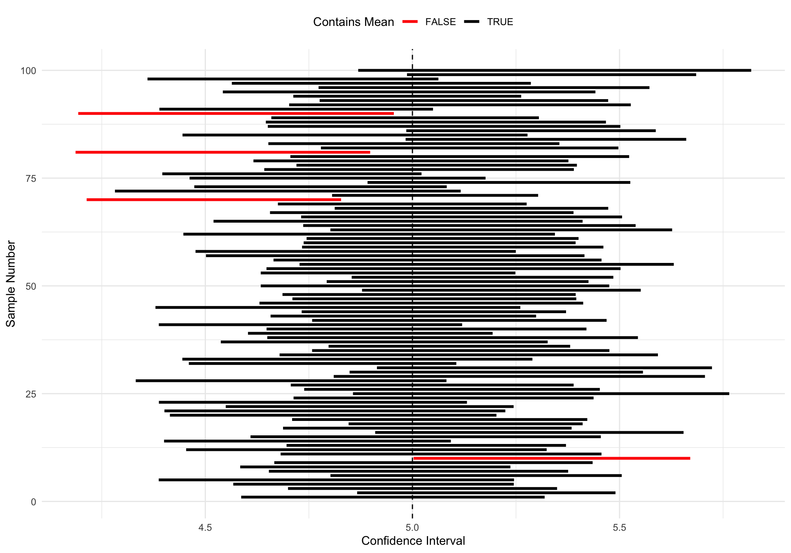
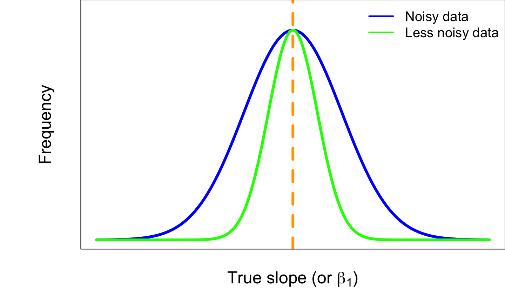
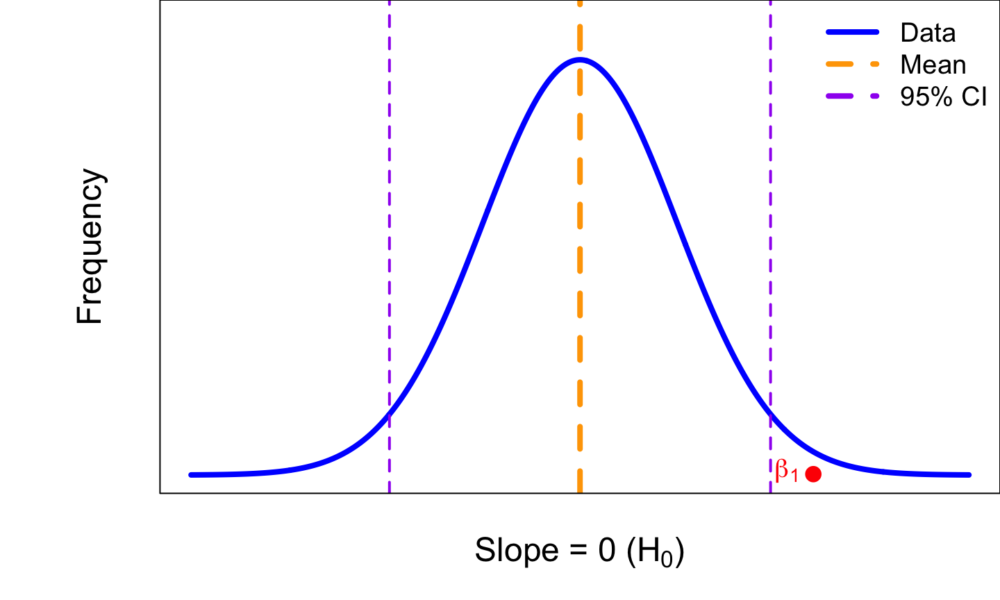
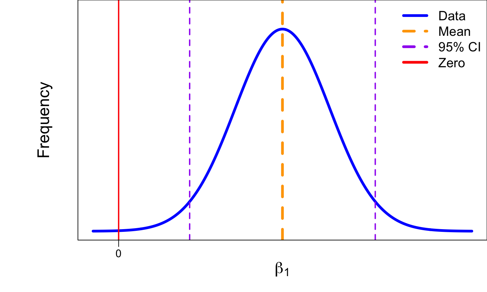
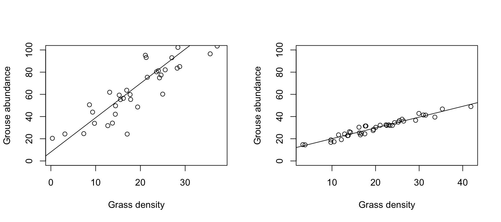

Linear Regression - presenting results
NRES 710
Last compiled: 2024-07-30
Review
Today we will discuss how to present results from linear regression. I am going to describe an approach that uses a few concise sentences to distill down all of the relevant information from the analysis you ran. But first, a brief review from last class.
The equation for the general linear model: \(Y = \beta0 + \beta1X + \epsilon \sim N(0, \sigma)\)
- We will use this throughout the class!
- Y is equal to beta0 (intercept) plus beta1 (slope) times X plus error, which is normally distributed with a mean of zero and a standard deviation (sigma).
- The error term indicates that we have a bunch of noise that is centered on the line (mean of zero), standard deviation has to be estimated and determines how close to the line the points are.
- We determine this lining by ensuring the average error is zero and minimize the sum of squares error (the distance from every point to that line).
- To calculate p-values, we partition the total variation in Y (Total Sum of Squares; TSS) into Sum of Squared Error (SSE) and the Sum of Squares due to Regression (SSR). TSS = SSE + SSR.
- Three things that influence p-values in regression: sample size, effect size, and noise.
Presenting results from regression
Today we will discuss how to report results when you run regression. By spending time discussing how to report the results, I am hoping this will help all of the material in this class make more sense.
In class exercise, I will expect you to report your results using this format, which is the format that you would be expected to report results in your thesis, dissertation, and scientific papers that you publish. This approach has four elements:
- Slope
- P-value (And you should report a slope whether or not the p-value is significant or not!)
- Confidence interval
- \(r^2\)
We have discussed slopes and p-values in the previous few classes, but today we will introduce confidence intervals and \(r^2\) values at greater detail.
Confidence intervals
95% confidence intervals (95% CI) – a measure of uncertainty around our estimate
Often, 95% CI ~ 2 * SE, although the exact formula depends on the sample size.
We have given our reader an estimate of the p-value, but it is unlikely to be a perfect estimate of truth.
On average, it is unbiased. If we collect some data 1,000 different times and fit a regression each time, the average slope from among each of those regressions will approximate truth. But any one regression on a single dataset may not be very close to truth… due to the nature of data, noise, process error, and sampling error.
Thus, we need to give our readers some measure of how certain we think our slope really is.
Definition of 95% confidence interval: 95% of all such intervals contain truth.
- It might be tempting to think about CI by saying that: there’s a 95% chance that truth is within the interval.
- However, this is wrong, because of the idea of the coinflip from the first day of class. Truth is either inside the interval, or it isn’t. Just because we don’t know that does not mean there is an underlying probability.
- This is a nice way of thinking about confidence intervals, but it’s not technically correct.
- Does this make sense? I personally find this topic confusing.
Here’s how we might visualize this. I simulated 100 random datasets, each with a mean \(\mu\) = 5, and then I measured the mean and 95% confidence intervals for each of the 100 datasets. I then plotted each individual datasets on the y-axis (1 to 100) and the 95% confidence intervals around the mean on the x-axis.

The red intervals are situations where the 95% confidence intervals do not include the true known mean!
Unfortunately, we have no idea if our particular confidence interval is one that includes ‘truth’ for the parameter!
Don’t worry if you find this difficult – I think most people do! And practically speaking, just about everyone interprets a 95% confidence interval as having a 95% probability of including the true parameter – and it doesn’t really matter that much!
95% CI and significance testing
Here’s another useful way to think about this graphically.
Let’s create a frequency distribution (y-axis) of our slope (x-axis). We run 1000 regressions, and get 1000 estimates of slope. The mean of all these estimates is ‘truth’ – the true slope. The distribution of estimates would be a normally-distributed bell curve. A noisy system has a wide bell curve and a wide confidence interval; a less noisy system (or a large sample sizes) would have a more narrow confidence interval. See below:

The confidence interval in our regression takes this distribution and instead of centering it on ‘truth’, it centers it on our estimated slope (\(\beta_1\)). If we assume this is the true slope, this bell curve represents the range of \(\beta_1\) estimates we would get when we run regression.
95% of the time we will get a slope estimate that is within the central area under the curve that contains 95% of this distribution. This is the 95% confidence interval. We can add two lines to the above graph to indicate this range of values around the true slope:

This same bell curve is also used in the calculation of p-values. Instead of centering on slope of mean = ‘truth’, it centers the distribution on a slope = 0, and it says: if we assume that slope = 0 (the null hypothesis; \(H_0\)), what is the probability of getting our observed data that produced \(\beta_1\)?

If our \(\beta_1\) is out in the tail of this distribution (or, outside of the 95% confidence interval), then we would get a small p-value, and then reject \(H_0\).
What this means is that we technically don’t need a p-value! Our confidence interval can tell us whether our slope estimate is statistically significant or not.
All we need to know is whether 0 (zero) is within the 95% confidence interval of \(\beta\) or not.

- If 0 is outside the 95% CI for \(\beta\), then \(\beta\) is a real, statistically significant effect!
- If 0 is inside the 95% CI for \(\beta\), then \(\beta\) is not a real, statistically significant effect.
Confidence interval terms:
- Confidence limits: the values for the upper and lower edges of 95% CI.
- Confidence interval: the distance between the \(\beta\) and each confidence limit.
If we get a p-value = 0.05, that means zero will be at one of our confidence limits (i.e., significant).
If we zero is outside of our confidence limits, the p-value will be < 0.05 (i.e., significant).
If zero is within one of our confidence limits, the p-value will be > 0.5 (i.e., not significant).
Reporting confidence intervals
\(\beta_1\) +/- 95% CI
Since the CI are symmetric, we can use plus/minus to report the CI.
- Note: why use +/i? Journals made this rule up to save space…
What you need to know:
- The technical definition of a 95% confidence interval: 95% of all such intervals contain ‘truth’.
- The relationship between confidence intervals and p-values. They are the flip-side of the same coin.
Easy red flag: something is significant, but the 95% CI include zero.
\(r^2\)
What is \(r^2\)
The technical definition of \(r^2\) is the proportion of variation in Y that is explained by X. This definition will be on quizes, etc. Keyword: proportion.
- This is not the absolute amount of variation in Y explained by X – which is the Sum of Squares due to Regression (SSR).
- How do you estimate the proportion…? Divide by the TOTAL.. the Total Sum of Squares (TSS).
- Also known as: coefficient of determination.
Thus: \(r^2 = \frac{SSR}{TSS}\)
Since it is a proportion, 0 < \(r^2\) < 1.
If \(r^2\) = 0, then no variation in Y is explained by X, and the slope is zero. Points at random, with no slope.
If \(r^2\) = 1, then all variation in Y is explained by X – and no variation in Y is due to error. All your points are right on the line!
This doesn’t really ever happen in environmental sciences… There is so much noise and other processes driving relationpships that \(r^2\) values never approach 1! Some have said that an \(r^2\) of 0.1 is a good results in ecology (!).
r is the correlation coefficient
- \(r = \sqrt{r^2}\)
- This can be positive or negative and anywhere from -1 to 1; it can describe negative relationships or positive relationships.
Why report \(r^2\)?
Why report \(r^2\), when I have previously said the main goal of regression was to measure the slope…?
Let’s assume you graduate and get a job as a habitat manager. Your new supervisor wants you to increase Greater Sage-grouse density in central Nevada, and they want you to do it by manipulating some variable (e.g, native grass density). You go out and collect data to estimate the relationship between grouse and grasses. Which of the following two scenarios would you rather have?

Left graph has a steeper slope, but right graph has less error.
Q: Anybody want to make an argument for the left situation being better?
- Left graph: a small change in X makes a larger increase in Y, because the effect size is big.
Q: Anybody want to make an argument for the right situation being better?
Right graph: we may have to make a bigger change in X to make the same change in Y, but we know that we will achieve that change in Y.
Left graph: There is a lot of uncertainty, and an increase in X could actually cause a decreased outcome in Y.
It’s not enough to report the slope… we can also benefit from reporting \(r^2\) because it describes the strength of the relationship and how closely X and Y are related.
Reporting results
For each 1 [X-units] increase in [X], we observed a [slope / \(\beta_1\)] [Y-units] (+/- [95% CI]; +/- 95% CI) [increase/decrease] in [Y] (p = [p-value]; \(r^2\)).
If p > 0.05, then add: “; however, our results are not statistically significant.”
Let’s try this with our results from last class.
# Set the seed for reproducibility
set.seed(123)
# Simulate a continuous predictor variable, precipitation
n <- 30
precip <- runif(n, min = 0, max = 10)
# Simulate the true, predicted response of biomass to precip (y-hat)
y_hat <- 2 + 3 * precip
# Simulate error for the response variable
error <- rnorm(n, mean = 0, sd = 2)
# Create the response variable, biomass
# biomass = beta0 + beta1 * precip + epsilon
biomass <- y_hat + error
# Create a data frame
datum <- data.frame(precip = precip, y_hat = y_hat, error = error, biomass = biomass)
# Fit the linear model
results <- lm(biomass ~ precip, data = datum)
# Examine the results
summary(results)##
## Call:
## lm(formula = biomass ~ precip, data = datum)
##
## Residuals:
## Min 1Q Median 3Q Max
## -4.2859 -1.4406 0.0391 1.4113 3.7624
##
## Coefficients:
## Estimate Std. Error t value Pr(>|t|)
## (Intercept) 3.1133 0.8057 3.864 0.000605 ***
## precip 2.8140 0.1259 22.355 < 2e-16 ***
## ---
## Signif. codes: 0 '***' 0.001 '**' 0.01 '*' 0.05 '.' 0.1 ' ' 1
##
## Residual standard error: 1.975 on 28 degrees of freedom
## Multiple R-squared: 0.9469, Adjusted R-squared: 0.945
## F-statistic: 499.7 on 1 and 28 DF, p-value: < 2.2e-16# Print the confidence intervals
confint(results)## 2.5 % 97.5 %
## (Intercept) 1.462793 4.763761
## precip 2.556159 3.071870# These are actually the confidence limits! Annoying
# How do we calculate the confidence intervalsFor each 1 cm increase in precipitation, we observed a 2.81 kg/ha … – but where are the confidence intervals??
Note: I recommend simply using two significant digits after the decimal. In the above case, you would avoid saying “a 3 unit increase” or “a 2.8 unit increase”.
- (Sidenote: technically, usual scientific convention involved reporting significant digits according to precision in the sampling… Maybe you remember this from chemistry class? But we often don’t know that in ecology, so we can be more relaxed about this here.)
# Print the confidence intervals
confint(results)## 2.5 % 97.5 %
## (Intercept) 1.462793 4.763761
## precip 2.556159 3.071870# These are actually the confidence limits! AnnoyingThese are actually the confidence limits! This is annoying.
Q: How would we calculate the 95% CI? There are a few ways…
- Upper limit minus estimate
- Estimate minus lower limit
- Upper limit minus lower limit divided by two
- Use whichever one makes most sense to you. I frequently use (3), but don’t forget to divide by two! Also, be careful with negative values…
(3.071 - 2.556) / 2## [1] 0.25753.071 - 2.814## [1] 0.257For each 1 cm increase in precipitation, we observed a 2.81 kg/ha (+/-0.25; 95% CI) increase in biomass, which was statistically significant (p < 2x10^-16; \(r^2\) = 0.95).
95% of the variation is explained by precipitation, while 5% is driven by noise!
Notes:
- When p < 2x10^-16, the p-value is so small that Program R won’t even give you the exact value.
- Report the exact p-value with scientific notation in this class.
- Two \(r^2\) values! Generally, we want to always use the multiple \(r^2\) – ignore the adjusted. \(r^2\) values often go up when we add more variables, and the adjusted \(r^2\) tries to account for that. We may talk about this later, but just use the ‘Multiple r-sqared’ value.
Minor adjustments
Q: What if the effect (slope) is negative? Don’t include the negative in the sentence, just change increase to decrease.
Sometimes when the way we measure things makes our \(\beta\) values a little… strange. For example, elevational gradients influence species richness in strong ways. However, the unit change for elevation is meters (meter), and a 1 unit increase in meters will only have a tiny effect on species richness – although highly significant. We can re-scale the metrics at ecologically relevant scales to make the effects make more sense. For elevation, we might multiple the X value, the effect, and the 95% CI times 1000, so that everything is expressed in terms of kilometers, rather than meters. You can do this with your raw data or with your results.
When you are trying to compare two different effects and trying to infer which has a stronger biological effect, you cannot compare one beta to another.
- Which is more important in driving biomass: precipitation or fertilizer?
- We can’t make that comparison.
- If you want to compare betas directly, you have to standardize your
variables first, before fitting the model.
- ‘Mean transformation’: subtract each value by the mean and divide by the standard deviation.
Concluding thoughts
I really like this sentence structure for reporting results. This was what I was taught in graduate school, and I have taught this to many peers and students since then. I find that it makes clear sense to readers about cause and effect in ecology. You could read this to your dad and they will understand it. They may not care – but they would understand it. That’s powerful!
We want to communicate our science clearly to our scientific peers, natural resource managers, and policy makers, and the public. This sentence structure is useful to do this. It is clear and it emphasizes biological effects, which helps us better understand and communicate cause and effect in nature.
This sentences are what you will report for the results of your exercise on linear regression! That’s it – report these sentences. I will not check your exact grammar, but it should follow this general pattern and be mindful of some of the details I mentioned above.